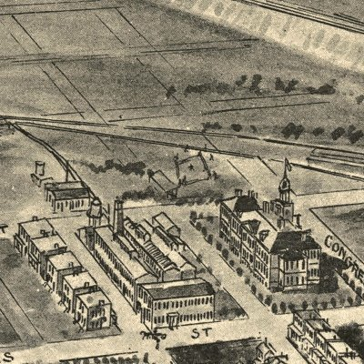

| Havre de Grace, Maryland - 1907 |
|---|
 |
| Birds eye view of Havre de Grace, Maryland 1907.
Drawn by T. M. Fowler. Fowler, T. M. (Thaddeus Mortimer), 1842-1922. CREATED/PUBLISHED Morrisville, Pa., Fowler & Kelly, c1907. NOTES Perspective map not drawn to scale. Includes illus. REFERENCE LC Panoramic maps (2nd ed.), 260 |